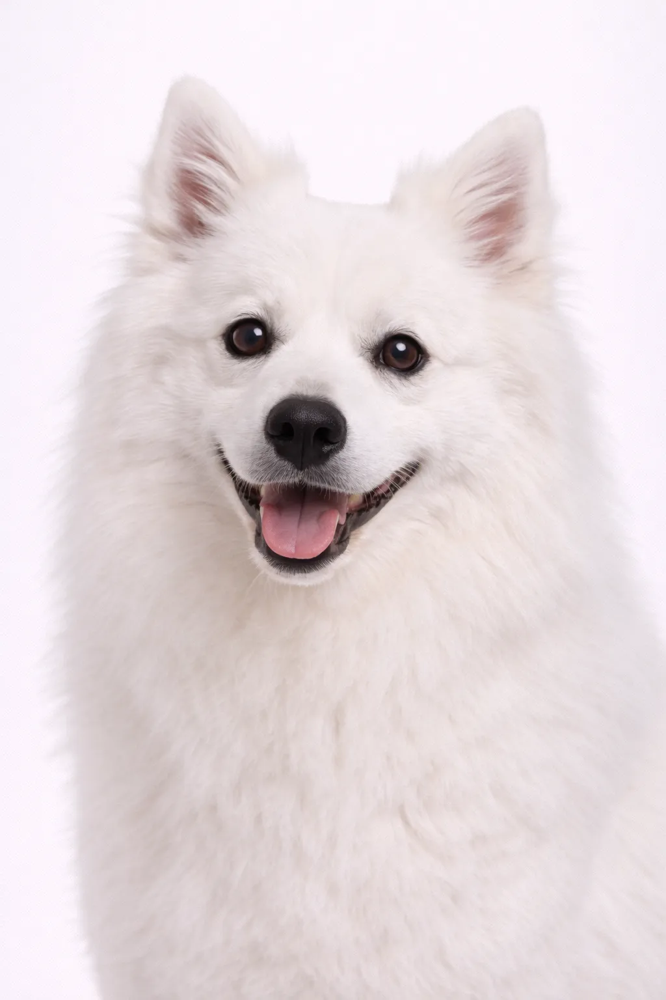

American Eskimo Dog
A pesar de su nombre, el American Eskimo Dog desciende de perros Spitz alemanes y fue popular en actos de circo. Son compañeros inteligentes y alegres.
Puntuaciones de la Raza
Temperamento
Descripción
A pesar de su nombre, el American Eskimo Dog desciende de perros Spitz alemanes y fue popular en actos de circo. Son compañeros inteligentes y alegres.
Temperamento
El American Eskimo Dog es conocido por ser inteligente, alerta y amigable. Son excelentes con los niños y hacen maravillosas mascotas familiares. Su inteligencia y deseo de complacer hacen que el entrenamiento sea agradable. La socialización temprana les ayuda a convertirse en compañeros equilibrados.
Salud
Generalmente saludable con una esperanza de vida de 13-15 años. Las preocupaciones comunes incluyen problemas articulares y afecciones de la piel. Los chequeos veterinarios regulares y el cuidado preventivo son importantes. Mantener un peso saludable ayuda a prevenir muchos problemas de salud.
Ejercicio
Raza de alta energía que requiere ejercicio vigoroso diario, al menos una hora de actividad. Prosperan con familias activas que disfrutan de actividades al aire libre. La estimulación mental a través del entrenamiento y juguetes de rompecabezas es igualmente importante. Sin ejercicio adecuado, pueden desarrollar problemas de comportamiento.
⦿ ¿Es Esta Raza Adecuada para Ti?
✓ Ideal Para
- Familias
- Quienes buscan un compañero entrenable
- Entusiastas de trucos y agilidad
- Dueños primerizos
✗ No Ideal Para
- Quienes les molesta la muda o el ladrido
- Dueños frecuentemente ausentes
- Climas calurosos
- Quienes buscan un perro silencioso
Nuestro Veredicto: Brillantes artistas esponjosos que aman aprender. Los American Eskimo Dogs son muy entrenables y amigables, pero mudan abundantemente y pueden ser vocales.